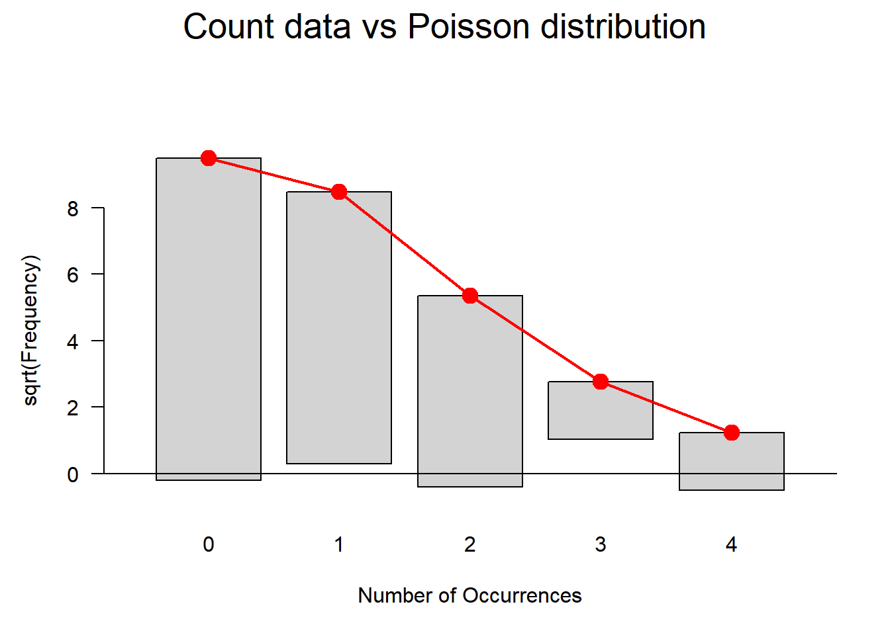
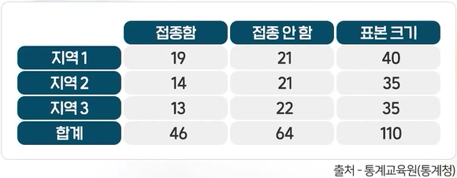

날씨가 맑고, 흐리고, 눈 오고, 비 오고 등으로 조사되고, 직업이 전문직, 사무직, 노무직 등으로 분류되는 등 숫자가 아닌 범주형 형태로 얻어지는 자료를 분석하는 기본적인 도구로 카이제곱통계를 이용한다. 표본으로 얻어진 범주의 분포들이 주어진 분포에 부합하는지 알아보려는 적합도 검정, 범주형 변수들끼리의 독립성 여부를 알아보려는 독립성 검정, 두 개 이상의 집단에서의 분포가 같은지 알아보려는 동질성 검정을 할 수 있다.
Warning in ks.test.default(price, "pchisq", df = 30): ties should not be
present for the Kolmogorov-Smirnov test
Asymptotic one-sample Kolmogorov-Smirnov test
data: price
D = 0.60067, p-value < 2.2e-16
alternative hypothesis: two-sided
중심극한정리(Central limit theory)
중심극한정리란 변수 \(X\)가 정규분포를 따르지는 않지만, 만약 모집단으로부터 충분한 크기의 표본을 뽑았다면(25~30개 이상) 통계량의 분포인 표본분포가 정규분포에 근사한다는 이론이다. 따라서 표본을 충분히 크게 뽑는다면 모집단이 정규분포를 따르지 않아도 중심극한정리에 의해 표본분포가 정규분포를 따른다.
카이제곱검정을 활용한 적합도 검정
코로나 접종을 받은 사람의 비율이 20대, 30대, 40대 연령에서 동일한지 \(\dfrac{1}{3}\), \(\dfrac{1}{3}\), \(\dfrac{1}{3}\)로 검정하거나, 중간시험에서 A, B, C학점을 받은 비율이 동일한지 \(\dfrac{1}{3}\), \(\dfrac{1}{3}\), \(\dfrac{1}{3}\)로 검정, 또는 \(20\%\), \(50\%\), \(30\%\)인지 검정하는 것을 단일 분류변수에 대한 검정이라고 한다. 범주형 변수의 분포에 대한 적합성 검정은 카이제곱 분포를 이용할 수 있다.
독감접종률 적합도 검정
독감을 접종한 사람들의 거주지역에 따라 독감 접종률의 차이가 있는지 검정해보자.
## goodness-of-fit test for one sample# area1 area2 area3 # H0: p1 = p2 = p3 ==> HO: p1=p2=p3=1/3# o1 = 19, o2=14, o3 = 13, n=46o1=19 ; o2=14 ; o3=13n = o1 + o2 + o3x=c(o1, o2, o3)chisq.test(x, p=c(1/3, 1/3, 1/3) ) #검정결과 귀무가설 채택, 세 지역의 접종률은 동일함
Chi-squared test for given probabilities
data: x
X-squared = 1.3478, df = 2, p-value = 0.5097
chisq.test(x, p=c(1/4, 2/4, 1/4 )) #귀무가설을 1/4, 2/4, 1/4로 바꿀 수도 있음. 검정결과 귀무가설 기각됨
Chi-squared test for given probabilities
data: x
X-squared = 8.6087, df = 2, p-value = 0.01351
시장점유율 적합도 검정
다음은 제품 4개에 대해 알려진 시장점유율과 실제 500명을 대상으로 사용하고 있는 제품의 사용자수를 나타낸 것이다.알려진 시장점유율과 관측값이 차이가 나는지 검정하시오.
# chisq.test(x=범주별 관측도수, p=범주별 비율, rescale.p, correct)# rescale.p: p의 합이 1이 아닐때, 1이 되도록 스케일을 조정할지 결정, F가 기본값# correct: 연속성 수정 여부, T가 기본값x <-c(110, 195, 47, 148)p <-c(0.2, 0.4, 0.1, 0.3)chisq.test(x, p=p)
Chi-squared test for given probabilities
data: x
X-squared = 1.3317, df = 3, p-value = 0.7216
# 검정 통계량이 1.3317이고, p값이 0.7216이다.# p값이 0.05(5%) 이상이므로 귀무가설을 기각할 수 없고,# 관측된 데이터는 기대되는 빈도와 통계적으로 유의미한 차이가 없다.
주사위- 균등분포 적합도 검정
주사위의 각 면이 나올 확률이 같은지 알아보기 위해 1200번을 던졌더니 210, 180, 185, 220, 195, 210이 나왔다. 이에 대해 이 주사위의 각 면이 나올 확률이 동일한지 검정하시오.
p <-rep(1/6, 6)x <-c(210, 180, 185, 220, 195, 210)chisq.test(x, p=p)
Chi-squared test for given probabilities
data: x
X-squared = 6.25, df = 5, p-value = 0.2826
# 검정 통계량이 6.25이고, p값이 0.2826이다.# p값이 0.05(5%) 이상이므로 귀무가설을 기각할 수 없고,# 주사위의 각 면이 나올 확률이 다르지 않으며, 각 면이 200번으로 나오지 않은 것은 확률적인 우연 변동이다.
AS접수건수- 포아송분포 적합도 검정
다음은 하루에 발생한 의료영상기기 AS접수건수이다. 이 자료로부터 하루에 발생하는 AS요청건수가 포아송분포를 따른다고 가정하는 것이 적합한지 적합도 검정을 하시오.
observed <-c(94, 67, 33, 3, 3) # 관측된 빈도total <-sum(observed) # 총 건수lambda <-sum(0:4* observed) / total # 포아송 분포의 평균 발생빈도 계산(하루 평균)expected <-dpois(0:4, lambda) * total # 기대 빈도 계산expected[5] <- total -sum(expected[1:4]) # 마지막 카테고리는 4 이상의 모든 값 포함chisq_test <-chisq.test(x = observed, p = expected / total) # 카이제곱 적합도 검정 수행
Warning in chisq.test(x = observed, p = expected/total): Chi-squared
approximation may be incorrect
print(chisq_test) # 검정 결과 출력
Chi-squared test for given probabilities
data: observed
X-squared = 4.9623, df = 4, p-value = 0.2912
# 각 범주의 기대빈도가 5보다 작은 경우에는 잘 맞지 않기에 경고메시지가 뜬다.
기대빈도가 낮은 주위의 범주들을 하나의 범주로 묶어서 붕괴된(collapsed) 빈도표를 만들어 카이제곱 적합도 검정을 수행한다.
x <-0:4Obs <-c(94, 67, 33, 3, 3)(n <-sum(Obs))
[1] 200
(sample.mean <-drop(x%*%Obs/sum(Obs))) # %*% := inner product, drop := as scalar
Warning in summary.goodfit(gf): Chi-squared approximation may be incorrect
Goodness-of-fit test for poisson distribution
X^2 df P(> X^2)
Pearson 4.760495 3 0.1901988
plot(gf, main="Count data vs Poisson distribution")

머리둘레- 정규분포 적합도 검정
어느 모자 제작업체가 야구모자를 제작하여 야구팬들을 대상으로 판매하려는 계획을 세웠다. 어떤 크기의 모자를 얼마나 많이 만들어야 할지 결정하기 전에 야구팬들의 머리둘레길이가 어떤 분포를 이루고 있는지 알아야 하였다. 이를 조사하기 위해 야구장을 찾은 야구팬 중 임의로 50명을 선정하고 머리둘레를 재어 다음과 같은 크기 순으로 정렬된 자료를 얻었다.
두 모집단에 대해서 단일변수의 분포가 동일한지 알아보는 것을 동질성 검정(homogeneity test)이라고 한다. 표본을 뽑을 때 모집단이 2개이기 때문에 서로 다른 모집단에서 각각 동일한 분류변수를 관측하는 것이 (적합도 검정과) 차이가 있다. 성인 남녀에서 공공기관 합격여부가 성공 또는 실패 비율이 남녀별 동일한지, 중간시험에서 남녀에 따라 학점의 분포가 동일한지, 도시농촌간 독감예방현황의 분포가 동일한지 등을 알아볼때 사용된다. 다음에 나오는 독립성 검정에서는 한 변수는 모집단을 나타내고, 다른 변수는 단일 분류변수를 나타낸다. 두 모집단이나 세 모집단 또는 여러 모집단에서 범주형 변수의 분포에 대한 동질성 검정도 chisq.test() 함수에 의해 검정할 수 있다.
세 지역의 독감 접종률이 다른지 검정하기
세 지역의 독감 접종 여부를 요약한 표가 다음과 같다. 세 지역의 독감 접종률이 다른지 검정하시오. 
area =c("area1", "area1", "area2", "area2", "area3", "area3") #각각에 대하여 접종 여부flu_shot =c("1.Yes", "2.No", "1.Yes", "2.No", "1.Yes", "2.No") #독감예방접종 여부count =c(19, 21, 14, 21, 13, 22)data =data.frame(area, flu_shot, count)tab =xtabs(count ~ area + flu_shot, data= data)tab #교차표 만들기
Driver & Passenger Driver only None
0.1720430 0.4623656 0.3655914
chisq.test(x=table(Cars93$AirBags), p=c(1/3, 1/3, 1/3)) #검정결과 귀무가설 기각, 비율이 다름
Chi-squared test for given probabilities
data: table(Cars93$AirBags)
X-squared = 12.194, df = 2, p-value = 0.00225
chisq.test(x=table(Cars93$AirBags), p=c(0.15, 0.70, 0.15)) #귀무가설의 비율을 바꿔서 검정결과 귀무가설 기각, 즉 비율이 하나 이상 차이가 있음
Chi-squared test for given probabilities
data: table(Cars93$AirBags)
X-squared = 36.621, df = 2, p-value = 1.116e-08
Homogeneity Test 동질성 검정
남녀별 대학생의 전공자수를 조사하였다. 남학생은 45명 중 독문학, 불문학을 각각 30, 15명이 전공하고 있었고, 125명의 여학생은 각각 50, 75명이 전공하고 있었다. 남녀별 전공의 분포가 같은지 알아보고자 한다. 즉 남학생 집단에서의 전공에 대한 이항분포의 두 범주에 대한 확률과 여학생 집단에서의 전공비율이 각각 같은지 검정하시오.
homo <-matrix(c(30, 15, 50, 75), nrow=2, ncol=2, byrow=T)dimnames(homo) <-list(c("남자","여자"), c("독문학","불문학"))n.marginal <-rowSums(homo)p.obs <- homo / n.marginalp.exp <-colSums(homo)/350homo.exp <- n.marginal%o%p.exphomo.exp
독문학 불문학
남자 37.78571 1.015873
여자 16.07143 57.142857
rowSums(homo.chisq)
남자 여자
38.80159 73.21429
(xx <-chisq.test(homo))
Pearson's Chi-squared test with Yates' continuity correction
data: homo
X-squared = 8.4044, df = 1, p-value = 0.003743
xx$expected
독문학 불문학
남자 21.17647 23.82353
여자 58.82353 66.17647
xx$residuals^2# 독립이라는 가정 하에 기댓값
독문학 불문학
남자 3.676471 3.267974
여자 1.323529 1.176471
sum(xx$residuals^2) # 독립이라는 가정 하에 카이제곱값
[1] 9.444444
# p값이 유의 수준(0.05)보다 낮으므로, 두 집단의 분포가 같다는 가정을 기각한다.
R에서 이러한 검정을 수행하기 위해 prop.test 함수를 사용할 수 있고, 이 함수는 두 또는 그 이상의 비율을 비교하는 데 사용된다.
# 남학생과 여학생의 독문학과 불문학 전공자 수male_students <-c(30, 15) # 남학생 독문학 30명, 불문학 15명female_students <-c(50, 75) # 여학생 독문학 50명, 불문학 75명# prop.test를 사용하여 두 집단 간의 비율 차이 검정prop.test(x =c(sum(male_students), sum(female_students)), n =c(sum(male_students) +sum(female_students), sum(female_students) +sum(male_students)), alternative ="two.sided")
2-sample test for equality of proportions with continuity correction
data: c(sum(male_students), sum(female_students)) out of c(sum(male_students) + sum(female_students), sum(female_students) + sum(male_students))
X-squared = 73.424, df = 1, p-value < 2.2e-16
alternative hypothesis: two.sided
95 percent confidence interval:
-0.5702594 -0.3709171
sample estimates:
prop 1 prop 2
0.2647059 0.7352941
# p값이 유의 수준(0.05)보다 낮으므로, 두 집단의 분포가 같다는 가정을 기각한다.
카이제곱검정을 활용한 독립성 검정
분류변수에 대한 검정 중 가장 빈번하게 사용되며, 한 모집단에서 두 개의 분류변수가 서로 독립적으로 움직이는지 확인하기 위해 사용하는 분석법이다. 즉 혈액형과 성별, 학년과 학점 등 두 개의 범주형 변수에 대해서 먼저 두 변수 간의 관련성이 주된 관심이 되며, 두 변수가 독립인지 검정하게 되는데, 이를 독립성 검정이라고 한다.
두 분류변수의 표 요약: 교차표, 분할표, 이원분류표
2개의 분류변수 혹은 번주변수가 주어진 경우, 관련성을 알아보기 위해 표로 요약하여 두 범주형 변수가 서로 독립인지 아닌지 파악하게 된다. 각 범주변수의 범주값을 가로와 세로에 나열해 교차되는 곳의 관측 도수를 세어서 요약한 표를 교차표, 분할표, 이원분류표라 한다. 이렇게 표로 먼저 요약한 후에 카이제곱 검정을 실시한다.
table(), xtabs() 함수를 이용한다.
table(x1, x2): x1은 행변수, x2는 열변수
table(x1, x2, x3): x1은 행변수, x2는 열변수, x3는 층변수
xtabs(~x1+x2+x3, data=dataframe): ‘~’과 함께 각 분류변수를’+’로 연결
동질성 검정은 한 모집단에서 두 분류변수 관계를 관측하는 것이고, 독립성 검정은 여러 모집단에서 한 분류변수를 측정하는 것이다. 교차표로 요악하는 방식은 동일하지만, 동질성 검정에서는 반드시 한 분류변수가 모집단을 나타낸다.
귀무가설(\(H_0\)): \(p_{ij} = p_{i}\ p_{j}\)
Fisher의 Exact결정
독립성 검정에서의 카이제곱 통계량 이용 조건
관측도수(셀)의 기대도수가 1 이상
기대도수가 5 이하인 셀이 20% 이하
기대도수가 5 이하인 셀이 20%를 넘었을 때, Fisher의 Exact 검정 이용
기대도수가 5 이하인 셀이 20%를 넘었을 때, 다음 메시지 발생
“Warning in chisq.test(tcy): Chi-squared approximation may be incorrect”
fisher.test() 함수 이용
성별과 흡연여부의 독립성 검정
성별과 흡연여부는 서로 독립인지, 관련이 있는지 독립성을 검정하시오.
library(MASS)survey$Sex
[1] Female Male Male Male Male Female Male Female Male Male
[11] Female Male Female Female Male Female Female Male Male Male
[21] Male Male Male Male Female Male Male Male Male Male
[31] Female Male Female Male Male Male Female Male Male Male
[41] Female Female Male Female Female Male Male Male Female Female
[51] Male Male Male Male Male Male Female Male Male Male
[61] Male Female Female Female Female Male Female Female Male Male
[71] Female Male Female Female Female Female Female Female Female Male
[81] Male Male Female Female Male Female Female Female Male Female
[91] Male Female Female Female Male Female Male Female Male Female
[101] Male Male Female Female Female Female Female Female Male Male
[111] Female Male Female Male Female Female Female Male Female Male
[121] Male Male Female Male Male Male Female Male Female Female
[131] Male Male Female Female Male Male <NA> Male Male Female
[141] Female Female Female Male Female Male Male Male Female Female
[151] Male Female Female Male Male Male Male Female Male Male
[161] Female Male Male Female Male Female Female Female Male Male
[171] Female Male Female Female Female Female Male Female Female Female
[181] Male Female Female Male Male Male Female Male Male Male
[191] Male Male Male Female Female Female Female Male Female Female
[201] Female Male Female Female Male Female Female Male Male Female
[211] Female Female Male Male Female Male Female Male Female Male
[221] Male Female Female Female Female Female Female Male Female Male
[231] Female Male Female Female Female Male Female
Levels: Female Male
survey$Smoke
[1] Never Regul Occas Never Never Never Never Never Never Never Never Never
[13] Never Never Never Never Never Never Never Never Never Never Never Never
[25] Never Never Never Never Never Never Occas Never Heavy Never Regul Occas
[37] Never Never Never Occas Never Never Never Never Never Never Regul Never
[49] Occas Never Never Never Never Never Regul Never Never Never Never Occas
[61] Never Never Never Never Never Never Never Never Never <NA> Never Heavy
[73] Never Never Never Heavy Never Heavy Never Never Never Never Never Never
[85] Never Never Never Never Never Never Never Never Never Never Heavy Never
[97] Regul Never Never Never Never Never Never Never Heavy Never Occas Never
[109] Never Regul Never Never Never Never Never Never Never Heavy Never Heavy
[121] Occas Occas Never Never Never Never Never Regul Never Never Never Never
[133] Never Occas Never Regul Never Never Never Never Never Never Never Never
[145] Never Never Regul Never Never Never Never Never Regul Never Never Never
[157] Heavy Never Never Regul Never Never Never Occas Never Never Never Regul
[169] Never Never Never Occas Regul Never Never Never Regul Never Regul Never
[181] Occas Occas Never Never Never Never Never Never Never Never Never Never
[193] Occas Never Never Never Never Never Occas Never Occas Never Never Never
[205] Regul Occas Never Never Never Never Never Never Never Never Never Never
[217] Never Never Never Never Heavy Never Never Never Never Never Heavy Never
[229] Regul Occas Never Never Never Never Never Never Never
Levels: Heavy Never Occas Regul
Fisher's Exact Test for Count Data
data: tab
p-value = 0.6671
alternative hypothesis: true odds ratio is not equal to 1
95 percent confidence interval:
0.03819639 3.62439874
sample estimates:
odds ratio
0.4635832
전공과 학점 분할표
130명의 대학원생을 대상으로 학부학점과 대학원전공을 조사한 결과가 다음 표와 같다. 대학원전공과 학부학점 간의 관련이 있는지 검정하시오.